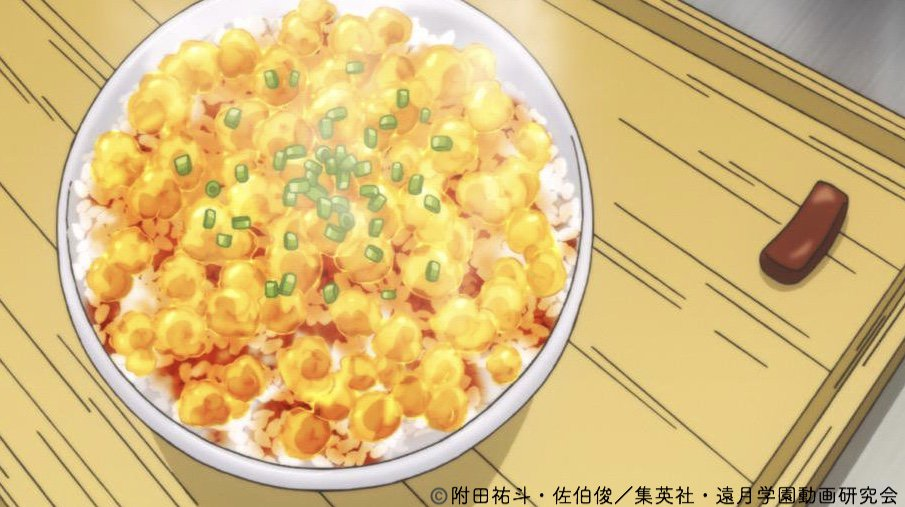

Bakeru Furikake Gohan「化けるふりかけご飯」

Description
Bakeru Furikake Gohan or「化けるふりかけご飯」is a Japanese dish from an anime show Food Wars. It is one of the 9 dishes in secret menu from
Souma family restaurant. The dish first appeared in the 2nd episode of the Anime series. When the Yukihira Souma, the main character has
to perform a dish that is good enough to satisfy the God Tounge ability from Erina Nakiri in order to pass the entrance exam
of the Totsuki Culinary Academy, one of the best Culinary Academy in Japan.
The Bakeru Furikake Gohan is a transforming version of the ordinary Furikake Gohan dish. Besides only sprinkling Furikake, which is the mixture of sesame seeds, chopped seaweed, sugar,
on top of rice, it coated by a special chilled chicken broth jewel cube and scrambled Egg on top.
Ingredients
- Chicken Wings
- Bonito Stock
- Ginger
- Onion
- Sake
- Sugar
- Mirin
- Light Soy Sauce
- Salt
- Broth
- Eggs
- Scallion
- White Rice
Steps
- Heat sesame oil in frying pan and sauté chicken wings until golden brown on both sides.
- Put items from (1) and (A) into a pot and turn on high until it boils. Skim scum off top, reduce heat to low, and simmer until broth level is reduced by half.
- Pour broth into a container to cool. Once cooled, place in refrigerator to chill and harden. Debone chicken wings and cut into strips.
- Make the egg curds. Crack eggs into bowl, add (B), and whisk. Pour into frying pan on low heat, stirring rapidly to create the curds. Once done, move to plate.
- Once (3) hardens, remove from container and cut aspic into 1cm x 1cm squares.
- Pour aspic, egg curds, and chicken strips over hot rice. Sprinkle with diced spring onion and enjoy!